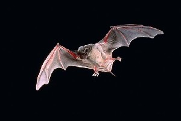
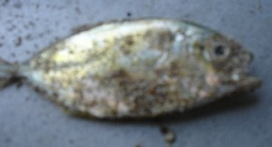
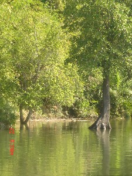
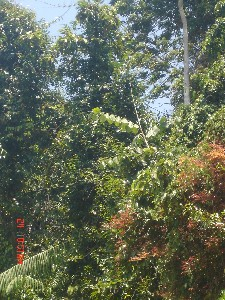
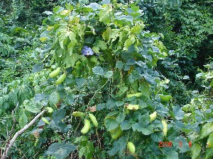
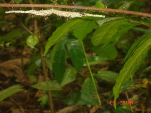
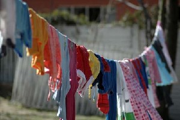
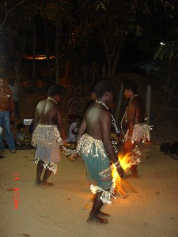

J - j
jɑbɑɡ जाबाग Etym: Bea; बेया. ADJ वि. bad; बुरा. SD: attribute, विशेषता.
jɑŋenu जाङेनू MORPH: jɑŋe-nu. Etym: Jeru; जेरू. N सं. Jarawa people; जारवा लोग. SD: people, लोग.
jɑt जात N सं. grandchild; पोता या पोती. SD: kin term, सम्बंधी वाचक शब्दावली.
 jelmo जेलमो VAR: jermo जेरमो. N सं. earthworms eaten by hen; केंचुआ जिनको मुर्गी खाती है. SD: insect & invertebrate, कीट-पतंग एवं अरीढ़ जीव.
jelmo जेलमो VAR: jermo जेरमो. N सं. earthworms eaten by hen; केंचुआ जिनको मुर्गी खाती है. SD: insect & invertebrate, कीट-पतंग एवं अरीढ़ जीव.
jelo जेलो N सं. evening; शाम. SD: time, समय.
jelojeɔ जेलोजेऔ MORPH: jelo-jeɔ. N सं. evening tide; शाम का ज्वारभाटा. SD: natural environment, प्राकृतिक वातावरण, time, समय.
 jemo जेमो N सं. Hammerhead shark; शार्क मछली. SD: fish, मछली. NT: One of the most dangerous sharks. एक ख़तरनाक शार्क मछली जिसका सिर हथौड़े की शक्ल का होता है।.
jemo जेमो N सं. Hammerhead shark; शार्क मछली. SD: fish, मछली. NT: One of the most dangerous sharks. एक ख़तरनाक शार्क मछली जिसका सिर हथौड़े की शक्ल का होता है।.
 jeo जेओ V क्रि. recede (water); पानी का स्तर गिरना.
jeo जेओ V क्रि. recede (water); पानी का स्तर गिरना.
jerik जेरीक N सं. dream; heaven; सपना; स्वर्ग. SD: life, जीवन, mythology, पौराणिक.
jero1 जेरो N सं. a kind of basket made of cane; एक प्रकार की बेंत की बनी टोकरी. SD: household, घरेलू. SEE: jero2 ‘come soon’ ‘जल्दी आओ जेरोhm:{2}’.
jero2 जेरो V क्रि. come soon; जल्दी आओ. SEE: jero1 ‘basket’ ‘टोकरी जेरोhm:{1}’.
jeroʈɔŋ जेरोटौङ MORPH: jero-ʈɔŋ. N सं. wild papaya tree; जंगली पपीते का पेड़. SD: flora, फूल-पत्ती. NT: This tree is used for making canoes, the dongi. डोंगी बनाने के काम में आता है।.
jeru जेरू Etym: Jeru; जेरू. VAR: yere येरे. Etym: Bea; बेया. N सं. a kind of flower; एक प्रकार का फूल. SD: flora, फूल-पत्ती. NT: It blooms between mid-February and mid-May and is also a sign of spring. One Great Andamanese person’s (Jeru) name is based on this flower. The name of the current language ‘Jero’ or ‘Jeru’ draws its name from the name of this flower. यह फूल बसन्त ऋतु का द्योतक है क्योंकि मध्य फरवरी से मध्य मई तक फूलता है। आदिवासी ‘जेरू’ का नाम इसी फूल पर पड़ा है। ‘जेरू’ या ‘जेरो’ भाषा का नाम भी इसी फूल पर पड़ा है।.
jetɑrɑpʰil जेताराफील N सं. a kind of creeper used for making wine; एक प्रकार की लता जिसका प्रयोग शराब बनाने में किया जाता है. SD: flora, फूल-पत्ती.
jetʰe जेथे V क्रि. feel uneasy; lack of appetite; जी मिचलना; भूख न लगना.  ʈʰɑ-jetʰe-bɔm ठाजेथेबौम. I feel nauseated. मेरा जी मिचला रहा है।.
ʈʰɑ-jetʰe-bɔm ठाजेथेबौम. I feel nauseated. मेरा जी मिचला रहा है।.
jeteɛm जेतेऐम V क्रि. feel shy; शर्माना. ʈʰut jete ɛm ठूत जेते ऐम. I feel shy. मुझे शर्म आती है।.
jeto जेतो VAR: jeːtʰo जेऽथो. N सं. an edible snake that lives in creeks; एक प्रकार का खाद्य सांप जो खाड़ी में रहता है. SD: reptile, रेंगने वाले जंतु.
ji जी N सं. rainwater; बारिश का पानी. SD: natural environment, प्राकृतिक वातावरण.
 |
 jibeʈ जीबेट N सं. a small bat found in houses; छोटा घरेलू चमगादड़. SD: animal, जानवर.
jibeʈ जीबेट N सं. a small bat found in houses; छोटा घरेलू चमगादड़. SD: animal, जानवर.
 |
jibeːʈ जीबेऽट N सं. a shiny black-blue bird; Barn swallow; अबाबील पक्षी. SD: bird, पक्षी.
jicerbijine जीचेरबीजीने MORPH: jicer-bijine. V क्रि. shower; बरसाना.
jicererɑliu जीचेरेरालीऊ MORPH: jicerer-ɑliu. N सं. end of rain; बारिश की समाप्ति. SD: natural environment, प्राकृतिक वातावरण.
jiceretlone जीचेरेत्लोने MORPH: jicer-et-lone. N सं. rainy season; बारिश का मौसम. SD: season, मौसम.
 jicerikomuʈʰuŋ जीचेरीकोमूठूङ Etym: Bo; बो. VAR: jicer-tumuʈʰuŋ जीचेरतूमूठूङ. N सं. heavy rain; मूसलाधार वर्षा. SD: natural environment, प्राकृतिक वातावरण.
jicerikomuʈʰuŋ जीचेरीकोमूठूङ Etym: Bo; बो. VAR: jicer-tumuʈʰuŋ जीचेरतूमूठूङ. N सं. heavy rain; मूसलाधार वर्षा. SD: natural environment, प्राकृतिक वातावरण.
jicerjine जीचेरजीने MORPH: jicer-jine. N सं. light rain; हल्की बारिश. SD: natural environment, प्राकृतिक वातावरण.
jicertujukʰu जीचेरतूजूखू MORPH: jicer-tu-jukʰu. N सं. beginning of rain; बारिश की शुरुआत. SD: season, मौसम.
 |
 jicɛr जीचैर VAR: jicer जीचेर. N सं. rain; बारिश. jicɛr be cɛr-pʰo जीचैर बे चैर फो. It will not rain here. यहाँ पर बारिश नहीं होगी।. SD: natural environment, प्राकृतिक वातावरण.
jicɛr जीचैर VAR: jicer जीचेर. N सं. rain; बारिश. jicɛr be cɛr-pʰo जीचैर बे चैर फो. It will not rain here. यहाँ पर बारिश नहीं होगी।. SD: natural environment, प्राकृतिक वातावरण.
jidɡɑ जीद्गा N सं. a kind of flower; एक प्रकार का फूल. SD: flora, फूल-पत्ती. NT: It signifies the onset of spring because it blooms between mid-February and mid-May. यह फूल बसन्त ऋतु का द्योतक है क्योंकि मध्य फरवरी से मध्य मई तक फूलता है।.
jiɖokotmo जीडोकोत्मो MORPH: jiɖo-kotmo. N सं. very short funny person; छोटा मज़ाकिया आदमी. SD: people, लोग.
jiːforɔːy जीऽफोरौऽय N सं. boiled turtle meat; कछुए का उबला मांस. SD: edible item, खाद्य सामग्री.
jikoɖuŋpʰu जीकोडूङफू ADJ वि. big (animal); विशाल (जानवर). SD: attribute, विशेषता.
 |
jikoːrɔk जीकोऽरौक VAR: jikorɔp जीकोरौप. N सं. Kokkari fish; कोक्कारी मछली. SD: fish, मछली.
jilɑp जीलाप VAR: jilɑpʰ जीलाफ. V क्रि. talk, slowly; धीरे-धीरे बात करना. u-ʈʰi-jilɑ-pʰ-om ऊठीजीलाफोम. Talk slowly. धीरे से बात करना.
jili1 जीली Etym: Jeru; जेरू. VAR: jilli जील्ली; yulu यूलू. Etym: Bea; बेया. N सं. a kind of flower; एक प्रकार का फूल. SD: flora, फूल-पत्ती. NT: It blooms in September, October and the first half of November. Blossoming of this flower also signifies the arrival of winter with intense sunshine. यह फूल जाड़े के आगमन का द्योतक है और मध्य सितंबर से मध्य नवम्बर तक खिलता है। इस फूल का खिलना चिलचिलाती धूप के आगमन का भी संदेश देता है।. SEE: jili2 ‘sea-shell’ ‘समुद्री सीपी जीलीhm:{2}’.
jili2 जीली N सं. sea shell; एक प्रकार का समुद्री सीपी. SD: marine, समुद्री. SEE: jili1 ‘flower’ ‘फूल जीलीhm:{1}’.
jiːli जीऽली N सं. father’s brother’s wife; ताई या चाची. SD: kin term, सम्बंधी वाचक शब्दावली.
jilicoŋ जीलीचोङ MORPH: jili-coŋ. Etym: Bo. N सं. a kind of fish; एक प्रकार की मछली. SD: fish, मछली. NT: In Sare, this fish is called ‘Komar’. सारे भाषा में इस मछली को कोमार कहते हैं।.
jiliɔrɔ जीलीऔरौ N सं. bright sunshine indicating the end of the rainy season; चमकती धूप जो वर्षा ऋतु की समाप्ति को दर्शाती है. SD: natural environment, प्राकृतिक वातावरण.
jilli जील्ली N सं. menstruating girl; वह लड़की जिसको रजोधर्म होता है. SD: people, लोग.
jilliɔrɔ1 जील्लीऔरौ MORPH: jilli-ɔrɔ. N सं. a kind of flower; एक प्रकार का फूल. SD: flora, फूल-पत्ती. SEE: jilliɔrɔ2 ‘scorching heat of sunshine; onset of summer’ ‘चिलचिलाती धूप; गर्मियों की शुरुआत जील्लीऔरौhm:{2}’.
jilliɔrɔ2 जील्लीऔरौ MORPH: jilli-ɔrɔ. N सं. onset of summer; गर्मियों की शुरुआत. SD: natural environment, प्राकृतिक वातावरण, season, मौसम. SEE: jilliɔrɔ1 ‘flower’ ‘फूल जील्लीऔरौhm:{1}’.
 |
jin जीन N सं. mangrove tree; खाड़ी पेड़. SD: flora, फूल-पत्ती. SEE: en ‘leaf’ ‘पत्ता एन ’.
jine जीने VAR: jinɛ जीनै. N सं. drizzle; बूंदाबांदी. SD: natural environment, प्राकृतिक वातावरण.
jinebolo जीनेबोलो Etym: Bo; बो. VAR: jinebɔːlo जीनेबौऽलो. N सं. white anthill; सफ़ेद चींटियों की बांबी. SD: habitat, रहन-सहन.
jinɛkom जीनैकोम MORPH: jinɛ-kom. V क्रि. drizzling; बूंदाबांदी होना.
 |
jinʈɛc जीन्टैच MORPH: jin-ʈɛc. N सं. leaf of Jin tree; जीन पेड़ का पत्ता. SD: flora, फूल-पत्ती. NT: These leaves are rubbed on the breasts of mothers to induce lactation. जच्चा के स्तनों पर इस पत्ती को मसलकर लेप करने से दूध उतर आता है।. SEE: jin ‘tree’ ‘पेड़ जीन ’.
 |
jirɑbɑlo जीराबालो MORPH: jirɑ-bɑlo. VAR: jiro-bɑlo जीरोबालो. N सं. a kind of creeper that induces rashes and itching when touched; एक प्रकार की खुजली करने वाली लता. SD: flora, फूल-पत्ती. NT: It is believed that when this creeper is put in the sea, it calms the sea and the winds. ऐसा माना जाता है कि समुद्र में इस लता को डालने से समुद्र और हवा का वेग कम हो जाता है।.
jirɑkɑmo जीराकामो MORPH: jirɑ-kɑmo. V क्रि. explain in such a way as to ensure understanding; समझाना.
jirɑke जीराके V क्रि. rebuke; गाली देना.
jireʈo जीरेटो N सं. a variety of a wasp; एक प्रकार का बर्र या ततैया. SD: insect & invertebrate, कीट-पतंग एवं अरीढ़ जीव.
jiribul जीरीबूल N सं. Nancouri shell; नानकौड़ी सीपी. SD: marine, समुद्री.
jiriktɑpʰoŋ जीरीक्ताफोङ MORPH: jirik-tɑ-pʰoŋ. N सं. door of heaven; स्वर्ग का द्वार. SD: mythology, पौराणिक. NT: It is believed that after death, one goes through this door. ऐसा माना जाता है कि मृत्यु के बाद आदमी को इस स्वर्ग के द्वार से गुज़रना पड़ता है।.
jirkʰuro जीरखूरो MORPH: jir-kʰuro. Etym: Kede; केदे. ADJ वि. big; बड़ा. SD: attribute, विशेषता.
jirmu जीरमू N सं. mythic cow-like animal; गाय जैसा एक पौराणिक जानवर. SD: mythology, पौराणिक, hunting & gathering, शिकार एवं संचय सम्बंधी. NT: A mythical inhabitant of Mayabander, North Andaman. It was supposed to be as big as a cow. It was supposed to have sticky hair, because of which anyone who touched it would get stuck to it. It was supposed to produce the tinkle of bells when it walked. ऐसा माना जाता है कि गाय के आकार जैसा इस विशाल जानवर के तन पर चिपचिपे बाल होते थे जिसकी वजह से इसको छूनेवाला इससे चिपक जाता था। इस उत्तरी अण्डमान के मायाबंदर स्थान पर पाये जाने वाले पौराणिक जानवर के चलने से घण्टियों की ध्वनि होती थी।.
jiːrmu जिऽरमू N सं. horse; घोड़ा. SD: animal, जानवर.
jirotɔro जीरोतौरो MORPH: jiro-tɔro. VAR: jirɔʈɔrɔ जीरौटौरौ. N सं. name of an island near Strait Island; स्ट्रेट द्वीप के पास एक द्वीप का नाम. SD: proper noun, व्यक्तिवाचक संज्ञा. NT: Literal meaning: ‘island-turtle’ as the island has an abundance of turtles. इस द्वीप का नाम वहां कछुओं की बहुतायत होने के कारण जीरो-तौरो अर्थात ‘द्वीप-कछुआ’ पड़ा।.
 |
jiroʈo जीरोटो MORPH: jiro-ʈo. N सं. a small bee with a hard sting that causes very painful swelling; छोटी मक्खी जो बहुत ज़ोर से काटती है जिससे अत्यंत पीड़ादायक सूजन हो जाती है. SD: insect & invertebrate, कीट-पतंग एवं अरीढ़ जीव.
jiveʈ जीवेट ADJ वि. small; छोटा. SD: attribute, विशेषता.
jiyɑ जीया N सं. song; गीत. SD: ritual, रीति-रिवाज़.
jiyo1 जीयो V क्रि. ebb; ebbing tide; भाटा. NT: Gradual ebbing of the tide water from the land. भाटे के पानी का धीरे-धीरे उतरना. SEE: jiyo2 ‘existential’ ‘अस्तित्ववाचक जीयोhm:{2}’.
jiyo2 जीयो AUX स क्रि. existential; अस्तित्ववाचक. kʰider ʈɔŋ buruin ter tɑŋo-l jiyo खीदेर टौङ बूरूईन तेर ताङोल जीयो. The coconut trees are on the other side of the hill. नारियल के पेड़ पहाड़ के दूसरी तरफ़ हैं।. nessojiyo नेस्सोजीयो. It is their. यह उनका है।. SD: grammar, व्याकरण. NT: Existential occurrence. SEE: jiyo1 ‘ebb’ ‘ज्वार जीयोhm:{1}’.
jo1 जो VAR: jɔ जौ. N सं. food; खाना. SD: edible item, खाद्य सामग्री. SEE: jo2 ‘song’ ‘गीत जोhm:{2}’; jo3 ‘take’ ‘लेना जोhm:{3}’.
jo2 जो VAR: jɔ जौ. N सं. song; गीत. jo-bi-kun-i-me जोबीकूनीमे. Sing a song. गाना गाओ।. ʈʰ-ico-jo ठीचोजो. my song. मेरा गाना. SD: ritual, रीति-रिवाज़. SEE: jo1 ‘food’ ‘खाना जोhm:{1}’; jo3 ‘take’ ‘लेना जोhm:{3}’.
jo3 जो V क्रि. take; लेना. joke जोके. Take (it). (इसे) लो।. SEE: jo1 ‘food’ ‘खाना जोhm:{1}’; jo2 ‘song’ ‘गीत जोhm:{2}’.
jobo जोबो Etym: Bea; बेया. N सं. a variety of snake; एक प्रकार का सांप. SD: reptile, रेंगने वाले जंतु.
jokoɑkɑnɖuko जोकोआकान्डूको MORPH: joko-ɑkɑn-ɖuko. N सं. woman having menstrual problems; महिला जिसे माहवारी की समस्या हो. SD: illness, रोग.
jol जोल V क्रि. crawl, like small creatures such as centipedes; कनखजूरे जैसे छोटे कीड़ों की तरह रेंगना. korobito bi jolom कोरोबीतो बी जोलोम. Centipedes are crawling. कनखजूरे रेंग रहे हैं।.
jošorɔ जोशोरौ MORPH: jo-šorɔ. N सं. sing; गाना. SD: activity & event, कार्यकलाप.
jowbe जोवबे V क्रि. buy; खरीदना.
jubu1 जूबू N सं. cluster; समूह. SD: quantifier, परिमाण वाचक. SEE: jubu2 ‘fly’ ‘मक्खी जूबूhm:{2}’.
jubu2 जूबू VAR: juvu जूवू. N सं. a kind of fly; एक तरह की मक्खी. SD: insect & invertebrate, कीट-पतंग एवं अरीढ़ जीव. SEE: jubu1 ‘cluster’ ‘समूह जूबूhm:{1}’.
jukʰe जूखे PARTICLE नि. agentive; कर्तृवाचक, वाला, क्रिया प्रत्यय. ʈoyɑ jukʰe ɑtʰire tebeno टोया जूखे आथीरे तेबेनो. The boy slept in the standing position. Literal meaning: the standing boy slept. लड़का खड़े-खड़े सो गया।. SD: particle, निपात. NT: postverbal. उपसर्ग।.
jukʰi जूखी PARTICLE नि. relative particle, which follows noun or adjective; वाला. nɔl totcyo jukʰi ɲyo ʈʰut-ɲyo-be नौल तोत्च्यो जूखी ञ्यो ठूत्ञ्योबे. The best house is mine. सबसे अच्छा वाला घर मेरा है।. SD: particle, निपात.
jukʰul1 जूखूल N सं. end/corner of a boat; नाव का सिरा. SD: boat related, नाव सम्बंधी. SEE: jukʰul2 ‘fish’ ‘मछली जूखूलhm:{2}’.
 jukʰul2 जूखूल VAR: jukʰule जूखूले; jukʰur जूखूर. N सं. a type of fish; moray eel; एक प्रकार की मछली. SD: fish, मछली. NT: Found in both salt water and freshwater. ईल मछली जो मीठे पानी व खारे पानी दोनों में मिलती है।. SEE: jukʰul1 ‘end/corner of a boat’ ‘सिरा, नाव का जूखूलhm:{1}’.
jukʰul2 जूखूल VAR: jukʰule जूखूले; jukʰur जूखूर. N सं. a type of fish; moray eel; एक प्रकार की मछली. SD: fish, मछली. NT: Found in both salt water and freshwater. ईल मछली जो मीठे पानी व खारे पानी दोनों में मिलती है।. SEE: jukʰul1 ‘end/corner of a boat’ ‘सिरा, नाव का जूखूलhm:{1}’.
jul जूल V क्रि. inceptive; to begin; immediate future; शुरू करना. teremit bɑt-ɛr it-julo तेरेमीत बात ऐर ईत जूलो. He was going to extinguish the incense. वह धूप बुझाने वाला था।. NT: Also used as a postverbal suffix. क्रिया पद के बाद लगने वाला प्रत्यय।.
 |
 julu1 जूलू N सं. clothes; dress; कपड़े; पोशाक. SD: costume & adornment, आभूषण एवं श्रृंगार. SEE: julu2 ‘cold’ ‘ठंडा जूलूhm:{2}’.
julu1 जूलू N सं. clothes; dress; कपड़े; पोशाक. SD: costume & adornment, आभूषण एवं श्रृंगार. SEE: julu2 ‘cold’ ‘ठंडा जूलूhm:{2}’.
julu2 जूलू ADJ वि. cold; ठंडा. SD: attribute, विशेषता. SEE: julu1 ‘clothes; dress’ ‘कपड़े; पोशाक जूलूhm:{1}’.
julue जूलूए VAR: julul जूलूल. DEIXIS डीक्सीस. in front of; ahead; सामने; आगे. SD: space, अन्तरिक्ष.
jululu जूलूलू ADV क्रि वि. before; पहले.  ʈʰɑrɑin-jululu-jicɛr-bi-ɑo ठाराएन जूलूलू जीचैर बीआओ. As I was about to leave, the rain started. मेरे जाते-जाते बारिश शुरू हो गई।. SD: time, समय.
ʈʰɑrɑin-jululu-jicɛr-bi-ɑo ठाराएन जूलूलू जीचैर बीआओ. As I was about to leave, the rain started. मेरे जाते-जाते बारिश शुरू हो गई।. SD: time, समय.
julum जूलूम N सं. crack of dawn; पौ फटना. SD: time, समय.
julumte जूलूम्ते MORPH: julum-te. ADV क्रि वि. early tomorrow morning; कल सुबह-सुबह.  julum-te ʈʰut-cone-bom जूलूमते ठूतचोनेबोम. I will go early tomorrow morning. मैं कल सुबह-सुबह जाऊंगा।. SD: time, समय.
julum-te ʈʰut-cone-bom जूलूमते ठूतचोनेबोम. I will go early tomorrow morning. मैं कल सुबह-सुबह जाऊंगा।. SD: time, समय.
 julututino जूलूतूतीनो MORPH: julu-tut-ino. N सं. cloth, wet; गीला कपड़ा. SD: costume & adornment, आभूषण एवं श्रृंगार.
julututino जूलूतूतीनो MORPH: julu-tut-ino. N सं. cloth, wet; गीला कपड़ा. SD: costume & adornment, आभूषण एवं श्रृंगार.
jumo जूमो VAR: jumoie जूमोईए. V क्रि. run past, brushing an object; छूकर निकल जाना. nu mɔʈɔtɑ kɛobi jumoie नू मौटौता कैओबी जूमोईए. The crab brushed past Nu’s feet. केकड़ा नू के पैर को छूते हुए निकल गया।.
jumu जूमू MORPH: jum-u. N सं. dream; सपना. ʈʰu-ku-jumu-ʈʰe ठू कू जूमू ठे. I dreamt of him. मैंने उसका सपना देखा. ʈʰu-ku-jum-o ठूकूजूमो. I dreamt. मैंने सपना देखा।. SD: life, जीवन.
juro जूरो N सं. maker of the idol of god; देवता की प्रतिमा बनाने वाला. SD: supernatural, अलौकिक.
 |
 jurɔe1 जूरौए VAR: jurɛ जूरै; juroy जूरोय. V क्रि. dance; नाचना. jirɔybik bɑʈek-tɛk toyɑ जीरौयीक बाटेक तैक तोया. (S/he) kept dancing till morning. (वह) सुबह तक नाचता रहा/रही।. SEE: jurɔe2 ‘fast’ ‘उपवास जूरौएhm:{2}’.
jurɔe1 जूरौए VAR: jurɛ जूरै; juroy जूरोय. V क्रि. dance; नाचना. jirɔybik bɑʈek-tɛk toyɑ जीरौयीक बाटेक तैक तोया. (S/he) kept dancing till morning. (वह) सुबह तक नाचता रहा/रही।. SEE: jurɔe2 ‘fast’ ‘उपवास जूरौएhm:{2}’.
 jurɔe2 जूरौए VAR: jurɛ जूरै; juroy जूरोय; jurɔye जूरौये. N सं. fast; उपवास. SD: ritual, रीति-रिवाज़. SEE: jurɔe1 ‘dance’ ‘नाचना जूरौएhm:{1}’.
jurɔe2 जूरौए VAR: jurɛ जूरै; juroy जूरोय; jurɔye जूरौये. N सं. fast; उपवास. SD: ritual, रीति-रिवाज़. SEE: jurɔe1 ‘dance’ ‘नाचना जूरौएhm:{1}’.
jurɔytɑtoŋ जूरौयतातोङ MORPH: jurɔy-tɑtoŋ. N सं. dancing ground; नृत्य स्थल. SD: ritual, रीति-रिवाज़.
juruwɑː जूरूवाऽ N सं. sea god; एक प्रकार के समुद्री देवता. SD: supernatural, अलौकिक.
jurwɑcom जूरवाचोम MORPH: jurwɑ-com. VAR: juruɑ-com जूरूआचोम. N सं. devil of the water; protectors; पानी का शैतान; रक्षक. SD: mythology, पौराणिक. NT: Devils who live in the sea but are known to be protectors of the Andamanese. पानी में रहने वाला शैतान जो अण्डमानियों की रक्षा करता है।.